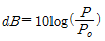
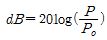
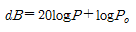
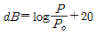
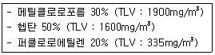
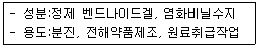
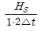
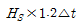
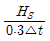
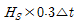

산업위생관리산업기사 (2014-05-25 기출문제)
1과목: 산업위생학 개론
1. 다음 중 산업안전보건법상 보건관리자의 자격에 해당되지 않는 것은 무엇인가?
- 「의료법」에 따른 의사
- 「의료법」에 따른 간호사
- 「산업안전보건법」에 따른 산업안전지도사
- 「고등교육법」에 따른 전문대학에서 산업위생관련 학과를 졸업한 사람
(정답률: 89%)

2. 근육운동에 필요한 에너지를 생성하는 방법에는 혐기성 대사와 호기성 대사가 있다. 다음 중 혐기성 대사의 에너지원이 아닌 것은 무엇인가?
- 지방
- 크레아틴인산
- 글리코겐
- 아데노신삼인산
(정답률: 89%)
3. 다음 중 인체의 구조에서 앉을 때, 서 있을 때, 물체를 들어 올릴 때 뛸 때 발생하는 압력이 가장 많이 흡수되는 척추의 디스크는 무엇인가?
- L1/S5
- L2/S1
- L3/S2
- L5/S1
(정답률: 89%)
4. 다음 중 영상표시단말기(VDT) 작업자의 건강장해를 예방하기 위한 방법으로 적절하지 않은 것은 무엇인가?
- 서류받침대는 화면과 같은 높이로 맞추어 작업한다.
- 작업자의 발바닥 전면이 바닥 면에 닿는 자세를 취하도록 한다.
- 윗 팔(upper arm)은 자연스럽게 늘어뜨리고, 팔꿈치의 내각은 90° 이상으로 한다.
- 작업자의 시선은 수평선상으로 10~15° 위를 바라보도록 한다.
(정답률: 77%)
5. 다음 중 산업위생관리담당자의 고유 업무와 가장 거리가 먼 것은 무엇인가?
- 배출되는 폐수가 기준치에 맞는지 확인하고 관리한다.
- 호흡기 보호구(마스크)를 구매하여 지급ㆍ관리하고, 착용여부를 확인한다.
- 새로 사용하는 화학물질에 대한 물리ㆍ화학적 성상 및 특징 등을 확인한다.
- 작업장 밖에서 소음을 측정하여 인근 지역 주민에게 과도한 소음이 전파되는지 확인한다.
(정답률: 70%)
6. 다음 중 인간공학에서 적용하는 정적치수(static dimensions)에 대한 설명으로 바르지 않은 것은?
- 동적인 치수에 비하여 데이터가 적다.
- 일반적으로 표(table)의 형태로 제시된다.
- 구조적 치수로 정적자세에서 움직이지 않는 피측정자를 인체 계측기로 측정한 것이다.
- 골격 치수(팔꿈치와 손목 사이와 같은 관절 중심거리 등)와 외곽치수(머리둘레 등)로 구성된다.
(정답률: 81%)
7. 다음 중 피로의 예방대책으로 가장 적절하지 않은 것은 무엇인가?
- 불필요한 동작을 피하고 에너지 소모를 적게 한다.
- 동적작업은 피하고 되도록 정적작업을 수행한다.
- 작업 환경은 항상 정리, 정돈해 둔다.
- 작업시간 중 적당한 때에 체조를 한다.
(정답률: 94%)
8. 운반 작업을 하는 젊은 근로자의 약한 손(오른손잡이의 경우 왼손)의 힘이 50kp라 할 때 이 근로자가 무게 10kg인 상자를 두 손으로 들어 올릴 경우 작업강도는 얼마인가?
- 5.0%MS
- 10.0%MS
- 15.0%MS
- 25.0%MS
(정답률: 77%)
9. 1700년대 “직업인의 질병”을 발간하였으며 직업병의 원인을 작업장에서 사용하는 유해물질과 근로자들의 불완전한 작업 자세나 동작으로 크게 두 가지로 구분한 인물은?
- Hippocrates
- Georgius Agricola
- Percivall Pott
- Bernardino Ramazzini
(정답률: 59%)
10. 구리(Cu)의 공기 중 농도가 0.⑤mg/m3이다. 작업자의 노출시간이 8시간이며, 폐환기율은 1.25m3/hr, 체내잔류율은 1이라고 할 때, 체내 흡수량은 얼마인가?
- 0.3mg
- 0.4mg
- 0.5mg
- 0.6mg
(정답률: 53%)
11. 다음 중 화학물질의 분류ㆍ표시 및 물질안전보건자료에 관한 기준상 발암성 물질 구분에 있어 사람에게 충분한 발암성 증거가 있는 물질을 나타내는 것은 무엇인가?
- Ca
- A1
- 1A
- C1
(정답률: 72%)
12. 다음 중 적성검사에 있어 생리적 기능검사에 속하지 않는 것은 무엇인가?
- 감각기능검사
- 심폐기능검사
- 체력검사
- 지각동작검사
(정답률: 82%)
13. 다음 중 산업재해지표의 사용시 주의사항으로 적절하지 않은 것은 무엇인가?
- 집계된 재해의 범주를 명시해야 한다.
- 연간근로시간수는 실적에 따라 산출하고 추정은 금물이다.
- 재해지수는 연간 또는 월간으로 산출할 수 있으나 사업장 규모가 작고 재해발생수가 적을 때는 의미가 거의 없다.
- 재해지수는 재해발생 양상의 추세로 재해에 대한 원인 분석에 대치될 수 있다.
(정답률: 48%)
14. 다음 중 국제노동기구(ⅠLO)협약에 제시된 산업보건 관리업무와 가장 거리가 먼 것은 무엇인가?
- 직장에 있어서의 건강 유해요인에 대한 위험성의 확인과 평가
- 작업방법의 개선과 새로운 설비에 대한 건강상 계획의 참여
- 작업능률 향상과 생산성 제고에 관한 기획
- 산업보건교육, 훈련과 정보에 관한 협력
(정답률: 62%)
15. 다음 중 산업위생에서 유해인자를 구분할 때 가장 적합하지 않은 것은 무엇인가?
- 생물학적 유해인자
- 인간공학적 유해인자
- 물리화학적 유해인자
- 환경과학적 유해인자
(정답률: 74%)
16. 다음 중 산업안전보건법령상 건강진단결과의 판정결과 “C1”의 의미로 올바른 것은?
- 경미한 이상소견이 있는 근로자
- 일반 질병의 소견을 보여 사후관리가 필요한 근로자
- 직업성 질병으로 진전될 우려가 있어 추적검사 등 관찰이 필요한 근로자
- 건강진단 1차 검사결과 건강수준의 평가가 곤란하거나 질병이 의심되는 근로자
(정답률: 61%)
17. 다음 중 노출기준 선정의 이론적인 배경과 가장 거리가 먼 것은 무엇인가?
- 동물실험 자료
- 화학적 성질의 안정성
- 인체실험 자료
- 산업장 역학조사 자료
(정답률: 72%)
18. 작업장의 기계화, 생산의 조직화, 기업의 경제성을 고려하여 모든 근로자가 근무를 하지 않으면 안 되는 중추시간(core time)을 설정하고, 지정된 주간 근무시간(예를 들어 주 40시간)내에서 자유 출퇴근을 인정하는 제도를 무엇이라 하는가?
- Free-time제
- Flex-time제
- Exchange-time제
- Variable-time제
(정답률: 74%)
19. 다음 중 Viteles가 분류한 산업피로의 3가지 본질과 가장 거리가 먼 것은?
- 재해의 유발
- 작업량의 감소
- 피로 감각
- 생체의 생리적 변화
(정답률: 57%)
20. 다음 중 소음성 난청에 대한 설명으로 바르지 않은 것은?
- 심한 소음에 노출되면 처음에는 일시적 청력변화를 초래하며 이것은 소음 노출을 중지하면 노출 전의 상태로 회복된다.
- 소음성 난청의 청력손실은 처음에 100 0Hz에서 가장 현저하고 점차 고주파음역과 저주파음역으로 퍼진다.
- 심한 소음에 반복되어 노출되면 코르티 기관에 손상이 발생하여 영구적 청력변화가 일어난다.
- 소음성 난청에 영향을 미치는 요소 중 음압 수준은 높을수록 유해하다.
(정답률: 62%)
2과목: 작업환경측정 및 평가
21. 다음 중 검지관 측정법의 장단점으로 바르지 않은 것은?
- 숙련된 산업위생전문가가 아니더라도 어느 정도만 숙지하면 사용할 수 있다.
- 특이도가 낮다. 즉 다른 방해물질의 영향을 받기 쉬어 오차가 크다.
- 측정대상물질의 동정 없이도 측정이 용이하다.
- 밀폐공간에서 산소부족 또는 폭발성 가스로 인한 안전이 문제가 될 때 유용하게 사용될 수 있다.
(정답률: 67%)
22. 작업환경 측정 시 공기의 단시간(순간)시료 포집에 이용되지 아니하는 것은?
- 포집백
- 주사기
- 진공포집병
- 임핀저
(정답률: 82%)
23. 공기 중 석면 농도를 허용기준과 비교할 때 가장 일반적으로 사용되는 석면 측정방법은 무엇인가?
- 광학 현미경법
- 전자 현미경법
- 위상차 현미경법
- 편광 현미경법
(정답률: 65%)
24. 소음의 음압수준 단위인 dB의 계산식은 무엇인가? (단, P : 음압, : 기준음압)




(정답률: 88%)
25. 옥외 작업장(태양광선이 내리쬐는 장소)의 자연습구온도=29℃, 건구온도=33℃, 흑구온도=36℃, 기류속도=1m/s 일 때 WBGT 지수 값은?
- 약 29.7℃
- 약 30.8℃
- 약 31.6℃
- 약 32.3℃
(정답률: 85%)
26. 미국 ACGIH 정의에서 가스 교환부위, 즉 폐포에 침착하는 호흡성 먼지(Respi rable Particulate Mass, RPM)의 평균입경(50% 침착되는 평균입자 크기)은 무엇인가?
- 10μm
- 4μm
- 2μm
- 1μm
(정답률: 73%)
27. 작업장 내 소음을 측정시 소음계의 청감보정회로는 어떤 특성에 맞추어 작업자의 노출수준을 평가 하는가? (단, 고시 기준)
- A
- B
- C
- D
(정답률: 85%)
28. 입자상 물질의 채취를 위한 MCE 막여과지에 대한 설명으로 올바르지 않은 것은?
- 산에 쉽게 용해된다.
- 입자상물질 중의 금속을 채취하여 원자흡광법으로 분석하는데 적정하다.
- 석면, 유리섬유 등 현미경분석을 위한 시료채취에 이용된다.
- 원료인 셀룰로오스가 흡습성이 적어 입자상물질에 대한 중량분석에도 많이 사용된다.
(정답률: 74%)
29. 고 유량 펌프를 이용하여 0.489m3의 공기를 채취하고, 실험실에서 여과지를 10% 질산 11mL로 용해하였다. 원자 흡광광도계로 농도를 분석하고 검량선으로 비교 분석한 결과, 농도가 32.5μPb/mL였다면 채취기간 중 납 먼지의 농도(mg/m3)는 무엇인가?
- 0.58
- 0.62
- 0.73
- 0.89
(정답률: 45%)
30. 탈착용매로 사용되는 이황화탄소에 대한 설명으로 바르지 않은 것은?
- 주로 활성탄관으로 비극성유기용제를 채취하였을 때 탈착용매로 사용한다.
- 이황화탄소는 유해성이 강하다.
- 상온에서 휘발성이 약하여 분석에 영향이 적은 장점이 있다.
- 탈착효율이 좋은 용매이며 가스크로마토그래피(FID)에서 피크가 작게 나온다.
(정답률: 48%)
31. 혼합유기용제의 구성비(중량비)는 다음 보기와 같았다. 이 혼합물의 노출농도(TLV)는 무엇인가?

- 937mg/m3
- 1087mg/m3
- 1137mg/m3
- 1287mg/m3
(정답률: 73%)
32. 사람들이 일반적으로 들을 수 있는 최대가청주파수 범위로 가장 적절한 것은 무엇인가?
- 2~2,000 Hz
- 20~20,000Hz
- 200~200,000Hz
- 2000~2,000,000Hz
(정답률: 83%)
33. 공기 중 납을 막여과지로 시료포집한 후 분석한 결과 시료여과지에서는 6μg, 공시료 여과지에서는 0.0⑤μg이 검출되었다. 회수율은 95%이고 공기시료 채취량은 100ℓ이었다면 공기 중 납의 농도(mg/m3)는? (단, 표준상태 기준)
- 약 0.028mg/m3
- 약 0.045mg/m3
- 약 0.063mg/m3
- 약 0.082mg/m3
(정답률: 64%)
34. 다음 중 순간시료재취방법(가스상물질)을 적용할 수 없는 경우와 가장 거리가 먼 것은 무엇인가?
- 오염물질의 농도가 시간에 따라 변할 때
- 공기 중 오염물질의 농도가 낮을 때
- 시간가중평균치를 구하고자 할 때
- 반응성이 없거나 비흡착성 가스상물질을 채취할 때
(정답률: 44%)
35. 유사노출그룹(Similar Exposure Group : SEG)을 설정하는 목적과 가장 거리가 먼 것은 무엇인가?
- 시료채취수를 경제적으로 결정하는데 있다.
- 시료채취시간을 최대한 정확히 산출하는데 있다.
- 역학조사를 수행할 때 사건이 발생된 근로자가 속한 유사노출그룹의 노출농도를 근거로 노출원인을 추정할 수 있다.
- 모든 근로자의 노출정도를 추정하고자 하는데 있다.
(정답률: 69%)
36. 어떤 유해 작업장에 일산화탄소(CO)가 0℃, 1기압 상태에서 100ppm 이라면 이 공기 1m3 중에 CO는 몇 mg 포함되어 있는가?
- 108mg
- 125mg
- 153mg
- 186mg
(정답률: 65%)
37. 각각의 포집효율이 80%인 임핀저 2개를 직렬 연결하여 시료를 채취하는 경우 최종 얻어지는 포집효율은 무엇인가?
- 90.0%
- 92.0%
- 94.0%
- 96.0%
(정답률: 50%)
38. 고열 측정구분에 의한 온도 측정기기와 측정시간 기준의 연결로 올바르지 않은 것은 무엇인가? (단, 고시 기준)
- 습구온도-0.5도 간격의 눈금이 있는 아스만통풍 건습계-5분 이상
- 흑구 및 습구흑구온도-직경이 5센티미터 이상 되는 흑구온도계 또는 습구흑구온도를 동시에 측정할 수 있는 기기-직경이 5센티미터일 경우 5분 이상
- 흑구 및 습구흑구온도-직경이 5센티미터 이상 되는 흑구온도계 또는 습구흑구온도를 동시에 측정할 수 있는 기기-직경이 15센티미터일 경우 25분 이상
- 흑구 및 습구흑구온도-직경이 5센티미터 이상 되는 흑구온도계 또는 습구흑구온도를 동시에 측정할 수 있는 기기-직경이 7.5센티미터 경우 5분 이상
(정답률: 62%)
39. 다음 중 1차 표준기구에 해당되는 것은 무엇인가?
- 폐활량계
- 열선기류계
- 오리피스미터
- 로타미터
(정답률: 87%)
40. 가스 및 증기시료 채취방법 중 실리카겔에 의한 흡착방법에 관한 설명으로 적합하지 않은 것은 무엇인가?
- 일반적으로 탈착용매로 CS2를 사용하지 않는다.
- 활성탄으로 채취가 어려운 아닐린, 오르쏘-톨루이딘 등의 아민류나 몇몇 무기물질의 채취가 가능하다.
- 추출액이 화학분석이나 기기분석에 방해물질로 작용하는 경우가 많다.
- 물을 잘 흡수하는 단점이 있다.
(정답률: 43%)
3과목: 작업환경관리
41. 200 sones인 음은 몇 phons인가?
- 103.3
- 108.3
- 112.3
- 116.6
(정답률: 34%)
42. 보호장구의 재질별 효과적인 적용 물질로 올바른 것은 무엇인가?
- Butyl 고무 - 비극성 용제
- 면 - 비극성 용제
- 천연고무(latex) - 극성 용제
- Vitron - 극성 용제
(정답률: 60%)
43. 귀마개에 관한 설명으로 올바르지 않은 내용은 무엇인가? (단, 귀덮개와 비교 기준)
- 차음 효과가 떨어진다.
- 착용 시간이 빠르고 쉽다.
- 외청도에 이상이 없는 경우에 사용이 가능하다.
- 고온작업장에서 사용이 간편하다.
(정답률: 73%)
44. 감압에 따른 기포 형성량을 좌우하는 [조직에 용해된 가스량]을 결정하는 요인과 가장 거리가 먼 것은 무엇인가?
- 고기압의 노출 정도
- 고기압의 노출 시간
- 체내 지방량
- 감압속도
(정답률: 44%)
45. 방진재인 공기스프링에 대한 설명으로 올바르지 않은 것은 무엇인가?
- 부하능력이 광범위하다.
- 압축기 등의 부대시설이 필요하지 않다.
- 구조가 복잡하고 시설비가 많다.
- 사용진폭이 적은 것이 많아 별도의 댐퍼가 필요한 경우가 많다.
(정답률: 62%)
46. 방독마스크 카트리지에 포함된 흡착제의 수명은 여러 환경 요인에 영향을 받는다. 흡착제의 수명에 영향을 주는 환경요인과 가장 거리가 먼 것은 무엇인가?
- 작업장의 온도
- 작업장의 습도
- 작업장의 유해 물질 농도
- 작업장의 체적
(정답률: 66%)
47. 다음의 작업 중에서 적외선에 가장 많이 노출 될 수 있는 작업에 해당되는 것은 무엇인가?
- 보석 세공 작업
- 유리 가공 작업
- 전기 용접
- X선 촬영 작업
(정답률: 50%)
48. 유해작업환경 개선대책 중 대치(substit ution)에 해당되는 내용으로 올바르지 않은 것은 무엇인가?
- 세탁시 화재 예방을 위하여 4클로로 에틸렌 대신에 석유나프타 사용
- 수작업으로 페인트를 분무하는 것을 담그는 공정으로 자동화
- 성냥제조시 황린 대신 적린 사용
- 작은 날개로 고속 회전시키는 송풍기를 큰 날개로 저속 회전시킴
(정답률: 63%)
49. 고열 장해에 대한 설명으로 올바르지 않은 것은 무엇인가?
- 열사병은 신체내부의 체온조절계통이 기능을 잃어 발생한다.
- 열경련은 땀으로 인한 염분손실을 충당하지 못할 때 발생하며 장해가 발생하면 염분의 공급을 위해 식염정제를 사용 한다.
- 열허탈은 고열작업장에 순화되지 못한 근로자가 고열작업을 수행할 경우 신체 말단 부에 혈액이 과다하게 저류되어 뇌에 혈액 흐름이 좋지 못하게 됨에 따라 뇌에 산소가 부족하여 발생한다.
- 일시적인 열 피로는 고열에 순화되지 않은 작업자가 장시간 고열환경에서 정적인 작업을 할 경우 흔히 발생한다.
(정답률: 67%)
50. 실내 오염원인 라돈(radon)에 대한 설명으로 올바르지 않은 것은?
- 라돈가스는 호흡하기 쉬운 방사선 물질이다.
- 라돈가스는 공기보다 9배가 무거워 지표에 가깝게 존재한다.
- 라돈은 폐암의 발생률을 높이고 있는 것으로 보고 되었다.
- 핵폐기물장 주변 또는 핵발전소 부근에서 주로 방출 되고 있다.
(정답률: 72%)
51. 공기 중 입자상 물질은 여러 기전에 의해 여과지에 채취된다. 차단, 간섭 기전에 영향을 미치는 요소와 가장 거리가 먼 것은 무엇인가?
- 입자크기
- 입자밀도
- 여과지의 공경(막여과지)
- 여과지의 고형분(solidity)
(정답률: 51%)
52. 사업장에서 일하는 근로자가 차음 평가수 27인 귀마개를 착용하고 일하고 있다. 이 귀마개의 차음 효과를 미국 산업안전보건청(OSHA)에서 제시하고 있는 방법으로 계산하면 차음 효과는?
- 5dB
- 10dB
- 20dB
- 27dB
(정답률: 80%)
53. 고온의 인체에 미치는 영향에서 일차적인 생리적 반응에 해당되지 않는 것은 무엇인가?
- 수분과 염분의 부족
- 피부혈관의 확장
- 불감발한
- 호흡증가
(정답률: 36%)
54. 다음의 성분과 용도를 가진 보호크림은 무엇인가?

- 피막형 크림
- 차광 크림
- 소수성 크림
- 친수성 크림
(정답률: 80%)
55. 작업환경개선 대책 중 대치의 방법으로 올바르지 않은 것은 무엇인가?
- 금속제품 도장용으로 유기용제를 수용성 도료로 전환한다.
- 아조염료의 합성에서 원료로 디클로로벤지딘을 사용하던 것을 방부기능의 벤지딘으로 바꾼다.
- 분체의 원료는 입자가 큰 것으로 바꾼다.
- 금속제품의 탈지에 트리클로로에틸렌을 사용하던 것을 계면활성제로 전환한다.
(정답률: 74%)
56. 마이크로파가 건강에 미치는 영향에 대한 설명으로 올바르지 않은 것은?
- 마이크로파의 생물학적 작용은 파장뿐만 아니라 출력, 노출시간, 노출된 조직에 따라서 다르다.
- 신체조직에 따른 투과력은 파장에 따라서 다르다.
- 생화학적 변화로는 콜린에스테라제의 활성치가 증가한다.
- 혈압은 노출 초기에는 상승하다가 곧 억제효과를 내어 저혈압을 초래한다.
(정답률: 57%)
57. 작업장의 이상적인 채광을 위해서 창의 면적은 바닥 면적의 몇 %로 하는 것이 가장 좋은가?
- 5~10%
- 15~20%
- 20~35%
- 35~50%
(정답률: 86%)
58. 시력장해, 환청, 근육경련 등의 산소중독증세가 나타나는 산소분압은 몇 기압 이상인가?
- 1기압
- 2기압
- 3기압
- 4기압
(정답률: 69%)
59. 소음원이 바닥 위(반자유공간)에 있을 때 지향계수(Q)는 무엇인가?
- 1
- 2
- 3
- 4
(정답률: 64%)
60. 비전리방사선에 속하는 방사선은 무엇인가?
- X선
- β선
- 중성자
- 마이크로파
(정답률: 61%)
4과목: 산업환기
61. 다음 중 국소배기장치의 투자비용과 전룍소모비를 적게 하기 위하여 최우선으로 고려하여야 할 사항은 무엇인가?
- 덕트의 직경을 최대한 크게 한다.
- 후드의 필요 송풍량을 최소화 한다.
- 제어속도를 최대한 증가시킨다.
- 배기량을 많게 하기 위해 발생원과 후드 사이의 거리를 가능한 한 멀게 유지한다.
(정답률: 73%)
62. 다음 중 배출구의 배기시설에 대한 일반적인 설치 방법에 있어 “15-3-15” 중 “3”이 의미하는 내용으로 올바른 것은?
- 외기풍속의3배로
- 배기속도는 3m/s가 되도록
- 유입구로부터 3m 떨어지게
- 이웃하는 지붕보다 3m 높게
(정답률: 74%)
63. 다음 중 원심력(싸이클론) 집진장치의 장점이 아닌 것은 무엇인가?
- 특히, 점성분진에 효과적인 제거능력을 가지고 있다.
- 직렬 또는 병렬로 연결하면 사용 폭을 보다 넓힐 수 있다.
- 비교적 적은 비용으로 큰 입자를 효과적으로 제거할 수 있다.
- 고온가스, 고농도 가스 처리도 가능하며 설치장소에 구애를 받지 않는다.
(정답률: 38%)
64. 다음 중 산업환기에 대한 설명으로 가장 적절하지 않은 것은 무엇인가?
- 작업장 실내ㆍ외 공기를 교환하여 주는 것이다.
- 작업환경상의 유해요인인 먼지, 화학물질, 고열 등을 관리한다.
- 작업자의 건강 보호를 위해 작업장 공기를 쾌적하게 하는 것이다.
- 작업장에서 기계의 힘을 이용한 환기를 자연환기라 한다.
(정답률: 87%)
65. 당므 중 용해로, 열처리로, 배소로 등의 가열로에서 가장 많이 사용하는 후드는 무엇인가?
- 슬롯형 후드
- 부스식 후드
- 외부식 후드
- 레시버식 캐노피형 후드
(정답률: 55%)
66. 다음 중 제어속도의 범위를 선택할 때 고려되는 사항으로 가장 거리가 먼 것은 무엇인가?
- 근로자 수
- 작업장 내 기류
- 유해물질의 사용량
- 유해물질의 독성
(정답률: 80%)
67. 불필요한 열이 발생하는 작업장을 환기시키려고 할 때 필요 환기량(m3/hr)을 구하는 식으로 올바른 것은? (단, 급배기 또는 실내ㆍ외의 온도차를 △t(℃), 작업장내 열부하를 Hs(Kcal/hr)라 한다.)




(정답률: 63%)
68. 국소배기용 덕트 설계시 처리물질에 따라 반송속도가 결정된다. 다음 중 반송속도가 가장 느린 물질은 무엇인가?
- 곡분
- 합성수지분
- 선반작업 발생먼지
- 젖은 주조작업 발생먼지
(정답률: 47%)
69. 후드의 유입계수가 0.85인 후드의 압력손실계수는 약 얼마인가?
- 0.38
- 0.52
- 0.85
- 1.03
(정답률: 59%)
70. 다음 중 여과집진장치의 포집원리와 가장 거리가 먼 것은 무엇인가?
- 관성충돌
- 원심력
- 직접차단
- 확산
(정답률: 60%)
71. 다음 중 전체환기의 설치조건으로 적합하지 않은 작업장은 무엇인가?
- 금속 흉의 농도가 높은 작업장
- 오염물질이 널리 퍼져있는 작업장
- 공기 중 오염물질 독성이 적은 작업장
- 오염물질이 시간에 따라 균일하게 발생되는 작업장
(정답률: 79%)
72. 송풍기에 걸리는 전압이 200mmH2O, 배풍량이 250m3/min, 송풍기의 효율이 70%이다. 여유율은 20%로 하였을 때 송풍기에 필요한 동력은 약 얼마인가?
- 6.8kW
- 9.8kW
- 11.7kW
- 14.1kW
(정답률: 29%)
73. 다음 중 국소배기 장치의 기본설계를 위한 항목에 있어 가장 우선적으로 결정해야 할 항목은 무엇인가?
- 후드형식 선정
- 소요풍량 계산
- 반송속도 결정
- 제어속도 결정
(정답률: 72%)
74. 다음 중 덕트 설치시의 주요 원칙으로 틀린 것은 무엇인가?
- 가능한 한 후드의 가까운 곳에 설치한다.
- 곡관의 수는 가능한 한 적게 하도록 한다.
- 공기는 항상 위로 흐르도록 상향구배로 한다.
- 덕트는 가능한 한 짧게 배치하도록 한다.
(정답률: 54%)
75. 분진을 다량 함유하는 공기를 이송시키고자 할 때 송풍기를 잘못 선정하면 송풍기 날개에 분진이 퇴적되어 효율이 저하되는 경우가 많다. 다음 중 자체정화 기능을 가진 송풍기는 무엇인가?
- 터보 송풍기
- 방사날개형 송풍기
- 후향날개형 송풍기
- 전향날개형 송풍기
(정답률: 45%)
76. 다음 중 압력에 관한 설명으로 바르지 않은 것은?
- 정압이 대기압보다 크면 (+) 압력이다.
- 정압이 대기압보다 작은 경우도 있다.
- 정압은 속도압과 관계없이 독립적으로 발생한다.
- 속도압은 공기흐름으로 인하여(-) 압력이 발생한다.
(정답률: 70%)
77. 플랜지가 부착되지 않은 장방형 측방 외부식 후드를 이용하여 연마작업에서 발생되는 분진을 포집ㆍ제거 하고자 할 때 필요송풍량(m3/min)은 무엇인가? (단, 제어속도는 1m/s, 오염원에서 후드까지의 거리는 50cm, 덕트내 오염물질 반송속도는 20m/s, 후드의 가로ㆍ세로 크기는 50cm×70cm이다.)
- 86
- 128
- 171
- 2⑤
(정답률: 39%)
78. 다음 중 1기압(atm)과 동일한 값은 무엇인가?
- 101.325kpa
- 760mmH2O
- 1.013kg/m2
- 10332.27bar
(정답률: 50%)
79. 150℃, 720mmHg 상태에서의 100m3인 공기는 21℃, 1기압에서는 약 얼마의 부피로 변하는가?
- 47.8m3
- 57.2m3
- 65.8m3
- 77.2m3
(정답률: 64%)
80. 다음 중 공기가 직경 30cm, 길이 1m의 원형 덕트를 통과할 때 발생되는 압력손실의 종류로 가장 올바르게 나열한 것은 무엇인가? (단, 21℃, 1기압으로 가정한다.)
- 마찰, 압축
- 마찰, 난류
- 압축, 팽창
- 난류, 팽창
(정답률: 58%)